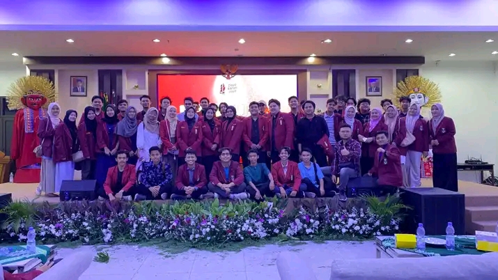

 Gedung merah adalah nama lain dari laboraturium pengkaderan ikatan mahasiswa muhamammadiyah (IMM) Ciputat. di gedung merah ini telah banyak tokoh-tokoh pemikir yang lahir dari gubuk gedung merah ini. gedung merah ini terletak di ciputat, samping Institut Ilmu Qur'an (IIQ) Jakarta. gedung merah ini atau IMM Merupakan salah satu organisasi Otonom (ortom) nya Muhammadiyah, dalam artian imm dan gedung merah ini adalah naungannya langsung dar pimpinan pusat muhammadiyah.